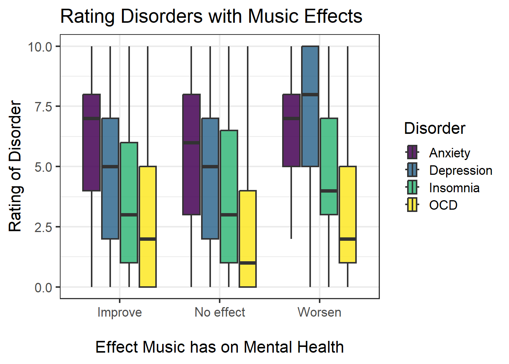

initial_data <- read_csv("data/mxmh_survey_results.csv")
wrangled_data <- initial_data |> rename(primary_streaming_service = `Primary streaming service`,
hours_per_day = `Hours per day`,
while_working = `While working`,
fav_genre = `Fav genre`,
foreign_languages = `Foreign languages`,
music_effects = `Music effects`,
Classical = `Frequency [Classical]`,
Country = `Frequency [Country]`,
EDM = `Frequency [EDM]`,
Folk = `Frequency [Folk]`,
Gospel = `Frequency [Gospel]`,
`Hip Hop` = `Frequency [Hip hop]`,
Jazz = `Frequency [Jazz]`,
`K-Pop` = `Frequency [K pop]`,
Latin = `Frequency [Latin]`,
Lofi = `Frequency [Lofi]`,
Metal = `Frequency [Metal]`,
Pop = `Frequency [Pop]`,
`R&B` = `Frequency [R&B]`,
Rap = `Frequency [Rap]`,
Rock = `Frequency [Rock]`,
`Video Game` = `Frequency [Video game music]`) |>
select(-Permissions) |>
mutate(music_improve = recode(music_effects,
'Improve'= '1',
'No effect'='0',
'Worsen' = '-1')) |>
mutate(music_improve = as.numeric(music_improve))Music and Mental Health!
Find the link to the GitHub repository for this project here.
Abstract
This project aims to explore the frequency that individuals struggling with anxiety, depression, OCD, or insomnia listen to specific music genres. A survey administered online from a student from the University of Washington has gathered responses from over 700 people, gathering information about whether music has improved or worsened the state of individuals’ mental health. A Shiny App was created to aid in the exploration of responses, allowing users to choose genre, disorder, minimum number of symptoms reported, and the overall effect music has had on their metal health. Findings show many people listening to rock music report music improving their mental health, regardless of reported symptoms. Further exploration reveals individuals who listen to video game music frequently report music worsening their mental health. It is important to note that these conclusions are drawn from self-reported data, which is prone to be effected by personal biases and uncontrollable outside variables.
Introduction
Music is a luxury that all people enjoy one way or another. People listen for a variety of different reasons, often to make oneself feel good, reduce stress, or as a distraction from something happening in their life. Music therapy was created because of the effects music has been shown to have on quality of life through relaxation and comfort. It is a low cost intervention that has been shown to improve mood and decrease anxiety, as well as decrease the pain associated with medical procedures and chronic conditions (Kemper & Danhauer, 2005). In terms of what kinds of music people are listening to experience these benefits, it has been shown that there is little differences between genres of music and the improvement of well being (Baker & Bor, 2008). Instead, the type of music only seems to reflect a person’s state of emotional vulnerability at a given time. Included in the data for the present analysis, individuals have reported the extent to which they have listened to a variety of genres and have reported how often they experience symptoms of four different mental disorders: anxiety, depression, OCD, and insomnia.
Anxiety disorder is a common disorder that affects people of all ages. People with this disorder experience chronic feelings of worry and persistent anxiousness that can affect how they live their day to day lives. Depression is a condition where individuals feel extremely unhappy, and often leads to a lack of interest in their regular routines and activities. Those who struggle with depression experience symptoms effecting their physical health as well, such as changes in sleep and appetite. Obsessive compulsive disorder, or OCD, is a condition that causes people to experience uncontrollable and reoccurring thoughts, or obsessions, that lead to compulsive or repetitive behaviors. Finally, insomnia is considered a sleep disorder that results in a struggle to fall asleep, stay asleep, or get good quality sleep. Individuals experiencing insomnia often have trouble completing daily tasks due to drowsiness and exhaustion throughout the day. All of these disorders are curable and able to be treated through medication or the right form of therapy. Anyone struggling with any of these conditions should talk with a medical professional to find the right treatment solution for their symptoms.
Data
The data that is used in this analysis comes from Kaggle, and contains self-reported survey responses from 736 participants. The data was collected through an online Google form created by Catherine Rasgaitis, an undergraduate student from the University of Washington. The form was posted in various Reddit forums, Discord servers, and social media platforms, as well as posters in public locations such as libraries and parks. Participants of all ages and locations were permitted to take the survey, gathering a final random sample ranging in ages from 10 to 89 years old (M = 25).
Within the survey, people were asked to rate how much they listen to 16 different music genres by selecting Never, Rarely, Sometimes, or Very Frequently. The 16 genres include: classical, country, EDM, folk, gospel, hip hop, jazz, K-pop, latin, lofi, metal, pop, R&B, rap, rock, and video game music. They were also presented with symptoms of Anxiety, Depression, OCD, and Insomnia and asked to rank each disorder on a scale of 0 to 10; 0 representing not having experienced this disorder at all and 10 representing having experienced this disorder regularly or to an extreme.
Variables included in the original data set:
Timestamp: Date and time when form was submittedAge: Age of participantPrimary streaming service: Choose from options of Apple Music, Pandora, Spotify, YouTube Music, Other streaming service, or do not use a streaming serviceHours per day: Number of hours listened to music per dayWhile working: Does the respondent listen to music while studying/working?Instrumentalist: Does the respondent play an instrument regularly?Composer: Does the respondent compose music?Fav genre: Favorite or top genreExploratory: Does the respondent actively explore new artists/genres?Foreign languages: Does the respondent listen to music with lyrics in a language they are not fluent in?BPM: Beats per minute of favorite genreFrequency [Classical]: How frequently the respondent listens to classical musicFrequency [Country]: How frequently the respondent listens to country music
…
Frequency [Video Game]: How frequently the respondent listens to video game musicAnxiety: Self-reported anxiety on a scale of 0-10Depression: Self-reported depression, on a scale of 0-10Insomnia: Self-reported insomnia, scale of 0-10OCD: Self-reported obsessive compulsive disorder, 0-10Music effects: Does music improve/worsen mental health conditions?
Research Question
The primary goal of this analysis is to explore the genres that those who report experiencing symptoms of mental disorders listen to the most. Furthermore, we wish to determine how those listening to these musical genres have viewed the effects of music on their health: has it improved their well being, made it worse, or no effect at all?
Analysis
Explore the Data
To begin our analysis, we will first look into the demographic of the participants in the study. Since our analysis is focused around those experiencing symptoms associated with anxiety, depression, insomnia, and OCD, those who reported no association to any of these disorders will be excluded from our future analysis. From doing this, 10 participants’ responses were removed from our data set. A plot showcasing the distribution of ratings for each disorder can be seen below.
wrangled_data |> mutate(sum_disorder = Anxiety + Depression + OCD + Insomnia) |>
filter(sum_disorder != 0) |>
pivot_longer(c(Anxiety, Depression, Insomnia, OCD),
names_to = "disorder",
values_to = "n_symptoms")|>
ggplot(aes(x = n_symptoms)) +
geom_histogram(aes(fill = disorder), position = "dodge", binwidth = .7) +
scale_fill_viridis_d(name = "Disorder") +
theme_bw(base_size = 16) +
labs(x = "Number of Symptoms",
y = "Number of Responses",
title = "Self Reported Symptoms")
From this visual we can see that those who experience anxiety mostly reported a rating around 7, along with those who reported symptoms of depression. The distribution of those reporting symptoms of OCD is skewed right, demonstrating that only a small number of people reported a higher rating of OCD. We can view a similar trend for those reporting symptoms of insomnia, although the distribution is not as strongly skewed as the responses for OCD. A table with the average ratings for each disorder is shown below.
wrangled_data |> mutate(sum_disorder = Anxiety + Depression + OCD + Insomnia) |>
filter(sum_disorder != 0) |>
pivot_longer(c(Anxiety, Depression, Insomnia, OCD),
names_to = "disorder",
values_to = "n_symptoms")|>
group_by(disorder) |> summarise(M = round(mean(n_symptoms), 2),
SD = sd(n_symptoms)) |>
pander()| disorder | M | SD |
|---|---|---|
| Anxiety | 5.92 | 2.726 |
| Depression | 4.86 | 2.996 |
| Insomnia | 3.79 | 3.078 |
| OCD | 2.67 | 2.845 |
It appears that of the disorders displayed in the table, people are, on average, rating anxiety higher than the other disorders. This is not surprising, since anxiety is the most common among these conditions. Looking closer at those experiencing these disorders, we can examine how they reported music has affected their mental health, as demonstrated in the plot below.
wrangled_data |> mutate(sum_disorder = Anxiety + Depression +
OCD + Insomnia) |>
filter(sum_disorder != 0) |>
pivot_longer(c(Anxiety, Depression, Insomnia, OCD),
names_to = "disorder",
values_to = "n_symptoms")|>
group_by(disorder) |>
drop_na(music_effects) |>
ggplot(aes(x = n_symptoms, y = music_effects)) +
geom_boxplot(aes(fill = disorder),
alpha = 0.85,
linewidth = 0.8) +
scale_fill_viridis_d(name = "Disorder") +
theme_bw(base_size = 16) +
coord_flip() +
labs(x = "Rating of Disorder",
y = "\nEffect Music has on Mental Health",
title = "Rating Disorders with Music Effects")
An interesting trend we can observe in the plot above is that those reporting music worsening their mental health also tend to report a higher rating of depression. One reason for this could be those experiencing more severe symptoms of depression may be more likely to listen to music that reflects how they are feeling, only highlighting the depressive thoughts already present in their mind. This trend among those with depression is not observed for those reporting music improving their mental health or having no effect. Besides this interaction, there seems to be little differences between the effects of music and reported experiences with other disorders.
Explore Different Genres
Looking into different genres of music, we will start by exploring which genres people reported as their favorite. The plot below shows the top 5 genres out of the 16 genres people were presented with.
wrangled_data |>
mutate(sum_disorder = Anxiety + Depression +
OCD + Insomnia) |>
filter(sum_disorder != 0) |>
group_by(fav_genre) |>
summarise(n = n()) |>
filter(n >= 40) |>
ggplot(aes(x = fct_reorder(fav_genre, -n), y = n)) +
geom_col(aes(fill = fav_genre)) +
scale_fill_viridis_d() +
theme_bw(base_size = 14) +
theme(legend.position = "none") +
labs(x = "\nFavorite Genre",
y = "Number of Responses",
title = "Top 5 Favorite Genres")Since rock music seems to be the top genre voted by participants, our analysis will dive deeper into this genre. The next few plots are taken from a Shiny App that was created to aid in the exploration of this data. The first two visuals are also interactive, allowing the sample size to be viewed for each group.
The link to the script for the Shiny app on GitHub can be found here.
plot <- wrangled_data |> pivot_longer(c(Classical, Country, EDM,
Folk, Gospel, `Hip Hop`, Jazz,
'K-Pop', Latin, Lofi, Metal, Pop, 'R&B',
Rap, Rock, 'Video Game'),
names_to = "genres",
values_to = "genre_listen") |>
pivot_longer(c(Anxiety, Depression, Insomnia, OCD),
names_to = "disorder",
values_to = "n_symptoms") |>
mutate(n_symptoms = as.numeric(n_symptoms)) |>
filter(music_effects == "Improve",
disorder == "Anxiety",
genres == "Rock",
n_symptoms >= 1) |>
group_by(genre_listen) |>
summarise(n = n()) |>
ggplot(aes(x = genre_listen, y = n)) +
geom_col(aes(fill = genre_listen)) +
scale_fill_viridis_d() +
theme_bw(base_size = 16) +
theme(legend.position = "none",
axis.title.x = element_text(vjust = -1)) +
labs(x = "How often do you listen to rock music?",
y = "Number of Responses",
title = "Reported Music IMPROVED Mental Health")
plotly::ggplotly(plot, tooltip = "n")The plot above contains responses from those who reported music improving their overall mental health and reported experiencing symptoms of anxiety. The bars represent the answers of participants when asked how often they generally listened to rock music. It can be observed that most people included in this category listen to rock music very frequently. On the other hand, the next plot demonstrates the answers of those who experience anxiety but report music to have overall worsened their mental health.
plot2 <-
wrangled_data |> pivot_longer(c(Classical, Country, EDM, Folk,
Gospel, `Hip Hop`, Jazz,
'K-Pop', Latin, Lofi, Metal, Pop,
'R&B', Rap, Rock, 'Video Game'),
names_to = "genres",
values_to = "genre_listen") |>
pivot_longer(c(Anxiety, Depression, Insomnia, OCD),
names_to = "disorder",
values_to = "n_symptoms") |>
mutate(n_symptoms = as.numeric(n_symptoms)) |>
filter(music_effects == "Worsen",
disorder == "Anxiety",
genres == "Rock",
n_symptoms >= 1) |>
group_by(genre_listen) |>
summarise(n = n()) |>
ggplot(aes(x = genre_listen, y = n)) +
geom_col(aes(fill = genre_listen)) +
scale_fill_viridis_d() +
theme_bw(base_size = 16) +
theme(legend.position = "none",
axis.title.x = element_text(vjust = -1)) +
labs(x = "How often do you listen to rock music?",
y = "Number of Responses",
title = "Reported Music WORSENED Mental Health")
plotly::ggplotly(plot2, tooltip = "n")The main difference that can be seen between the two previous visuals occurs within those who reported never listening to rock music. It appears that there are a greater amount of people in this group (as compared to rarely, sometimes, and very frequently) who have never listened to rock music than in the previous plot. It is important to acknowledge that the number of people who reported music worsening their mental health and never listening to rock music is small, and we should be cautious when making conclusions.
The next visualization demonstrates the differences between these two groups (those who said never between worsened and improved mental health) more clearly, and assess if there really are differences between them.
freq <- wrangled_data |> pivot_longer(c(Classical, Country, EDM, Folk,
Gospel, `Hip Hop`, Jazz,
'K-Pop', Latin, Lofi, Metal, Pop,
'R&B', Rap, Rock, 'Video Game'),
names_to = "genres",
values_to = "genre_listen") |>
pivot_longer(c(Anxiety, Depression, Insomnia, OCD),
names_to = "disorder",
values_to = "n_symptoms") |>
mutate(n_symptoms = as.numeric(n_symptoms)) |>
filter(disorder == "Anxiety",
genres == "Rock",
n_symptoms >= 1,
genre_listen == "Never" | genre_listen == "Very frequently") |>
group_by(music_effects, genre_listen) |>
drop_na(music_effects) |>
summarise(n = n()) |>
ungroup() |>
mutate(prop = ifelse(genre_listen == "Never",
n / sum(n[genre_listen == "Never"]),
n / sum(n[genre_listen == "Very frequently"])))
ggplot(data = freq, aes(x = music_effects,
y = prop,
color = genre_listen)) +
geom_point(size = 3) +
geom_line(aes(group = genre_listen), linewidth = 1.4) +
scale_color_manual(name = "Frequency",
values = c("Never" = "purple4",
"Very frequently" = "cyan4"),
labels = c("Never",
"Very frequently")) +
theme_bw(base_size = 16) +
theme(axis.title.x = element_text(vjust = -1)) +
labs(x = "Music Effect",
y = "Proportion of Responses",
title = "Comparing the Effects of Listening to Rock Music")In this plot, the blue line represents those who reported listening to rock music very frequently and the purple line represents those who reported never listening to rock music. This plot also uses proportion of responses instead of number of responses to allow for better comparisons.
If we look at the difference between the proportion of those who said music worsened their mental health versus those who reported an improvement (within the never group), the proportion of those who claimed improvement is much larger.
We can also observe that those who listen to rock music frequently are more likely to say music has no effect on their overall mental health compared to those who never listen to rock music, and those who are reporting improvement or worse effects show proportions slightly greater than those who report frequent listening.
This analysis investigated the relationship of those experiencing anxiety and listen to rock music, but using the Shiny App that was created for this study allows users to investigate the other combinations of disorders and genres as well. Another interesting finding found through exploration of the Shiny App was those who experience symptoms of depression and report music worsening their mental health listen to video game music very frequently. Additionally, those who report music improving their mental health more often report never listening to video game music.
Conclusion
In conclusion, this project has allowed us to observe trends between various mental disorders and music genres people listen to. We have revealed that those who say music has worsened their mental health report higher rates of depression opposed to other disorders. We also found interesting trends between mental health and those who listen to genres such as rock or video game music. Further findings can be explored using the Shiny App.
If there was more time to further explore this data set, variables concerning the context around listening to music would be interesting to investigate. This data set includes variables such as age, the number of hours listening to music per day, and if someone listens to music while working that could inform the context around listening to music.
Limitations
An important limitation of the present study is the small sample size for some of the subgroups of people in this data. For example, when comparing certain questions on the survey, some genres have small numbers of responses or small number of people that listen to certain types of music. The sample sizes of these groups should be noted when making comparisons.
It is also important to highlight that the responses in this survey are self-reported answers, which can contain much variation and bias. It is unknown whether participants have been formally diagnosed with anxiety, depression, OCD, or insomnia, as their answers are solely based on the associated symptoms they have experienced.
Read the most recent blog post about this topic here.
References
Baker F. & Bor W. (2008). Can Music Preference Indicate Mental Health Status in Young People? Australasian Psychiatry. 16(4), 284-288. https://journals.sagepub.com/doi/10.1080/10398560701879589
Kemper, K. J., & Danhauer, S. C. (2005). Music as Therapy. Southern Medical Journal, 98(3), 282–288. https://doi.org/10.1097/01.smj.0000154773.11986.39